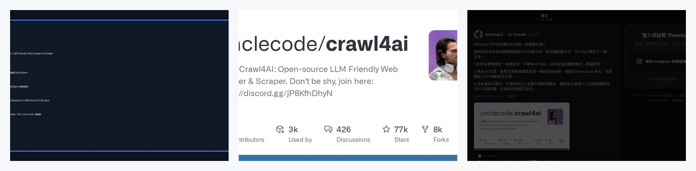
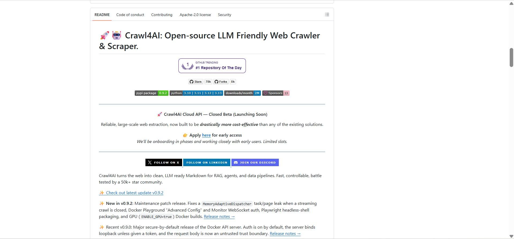
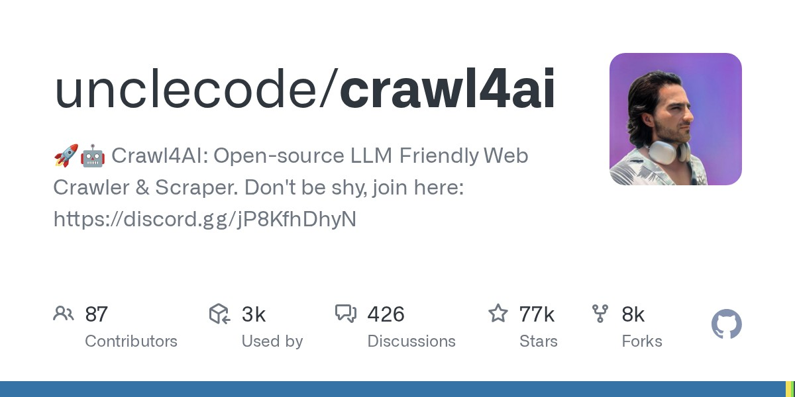

社群雙來源｜crawl4ai：把網頁轉成 LLM-ready Markdown 的開源爬蟲

為什麼保存
這則 Threads 值得歸檔，因為它把 **crawl4ai** 放進「AI Agent / RAG / 資料流水線」的實用工具脈絡：不是單純爬 HTML，而是把網頁整理成乾淨、可餵給 LLM 的 Markdown，降低後續摘要、抽取、引用與知識庫建檔的摩擦。
對欒帥的 AI 學習雷達來說，這也剛好呼應目前的自動歸檔流程：來源擷取、網頁清洗、圖片保存、Markdown 條目生成、索引建置與 GitHub Pages 部署，都需要穩定的 web data layer。
Threads 可見重點
來源是 KiKi Tataysi（@kikitataysi）的 Threads 貼文。主文稱 GitHub 上有「最好的爬蟲」，指向 `unclecode/crawl4ai`，並整理三個賣點：
- **免費、開源、低摩擦**：不需要註冊、不需要 API key、沒有按頁扣費模式。
- **專為 AI 打造**：可把複雜網頁提純成簡潔、規範的 Markdown，適合餵給 LLM 與資料流水線。
- **效能與部署**：貼文聲稱新版本優化記憶體調度、GPU 容器部署，支援高併發抓取。
貼文連結卡片顯示 GitHub repo：`unclecode/crawl4ai`，描述為「Open-source LLM Friendly Web Crawler & Scraper」。畫面可見約 77k stars、8k forks、87 contributors 等 GitHub card 統計；這些數字會隨時間變動。
Facebook / OpenClaw 補充來源（2026-08-10）
欒帥後續分享 Facebook 社團 `OpenClaw / AI Agent / n8n 交流應用社團` 的 Shane Hsieh 貼文，內容同樣把 crawl4ai 放在「不用申請 API key、可自架、適合把網頁餵給 AI」的工具脈絡。可見重點包括：
- 對比 Firecrawl：Firecrawl 有免費額度與雲端 API 體驗，但額度用完後會遇到付費或重置限制；crawl4ai 的開源版則可本地安裝與自架。
- 取得格式：貼文強調爬取後可直接輸出 LLM 友善 Markdown，並支援結構化資料萃取、CSS selector、LLM-driven extraction。
- 執行型態：可用 Chromium、Firefox、WebKit；支援 deep crawl / adaptive crawl、Docker、API server、proxy 與 session 管理。
- 安裝流程：`pip install -U crawl4ai`、`crawl4ai-setup`、`crawl4ai-doctor`。
- 社群數字：貼文提到約 77.6K stars；2026-08-10 以 GitHub API 查核為 77,693 stars、8,044 forks。

這張 Facebook 附圖是 crawl4ai GitHub README 的長截圖：可見標題「Crawl4AI: Open-source LLM Friendly Web Crawler & Scraper」、Apache-2.0 license、PyPI 0.9.2、Python 3.10–3.13、每月下載量、Cloud API closed beta、X / LinkedIn / Discord 入口，以及 v0.9.2 / v0.9.0 更新摘要。

官方 / GitHub 查核
GitHub API 查核時，`unclecode/crawl4ai` 的公開資訊如下：
| 項目 | 查核結果 |
|---|---|
| Repo | `unclecode/crawl4ai` |
| Homepage | `https://crawl4ai.com` |
| 主要語言 | Python |
| 授權 | Apache-2.0 |
| 建立時間 | 2024-05-09 |
| Stars | 約 77,693（2026-08-10 查核；會隨時間變動） |
| Forks | 約 8,044（2026-08-10 查核；會隨時間變動） |
| 最新 release | v0.9.2，2026-07-15 |
README 的核心定位很清楚：
> Crawl4AI turns the web into clean, LLM ready Markdown for RAG, agents, and data pipelines.
README 也列出開發者選用理由：LLM-ready output、smart Markdown、async browser pool、caching、sessions、proxies、cookies、user scripts、hooks、CLI、Docker 等。Quick Start 則包含：
```bash
pip install -U crawl4ai
crawl4ai-setup
crawl4ai-doctor
```
以及 Python 使用方式：透過 `AsyncWebCrawler().arun(url=...)` 取得 `result.markdown`。
跟 Firecrawl 的差異怎麼看
知識庫先前已收錄 Firecrawl Keyless。兩者都可視為 Agent Web Data Layer，但定位不同：
| 工具 | 適合情境 | 注意事項 |
|---|---|---|
| crawl4ai | 想自架、可控、開源、Python / Docker / CLI 整合，重視本地或私有部署。 | 要自己處理環境、Playwright、代理、併發、失敗重試與維運。 |
| Firecrawl | 想快速用 API / MCP / 雲端服務取得 search / scrape / interact 能力。 | 免費額度、API key、定價、rate limits 與平台政策需看官方最新規則。 |
如果欒帥要把它納入 Hermes 工具庫，crawl4ai 比較像「可自架的資料擷取引擎」；Firecrawl 則像「立即可用的雲端資料擷取 API」。
實務判讀
crawl4ai 的價值不是「免費就一定最好」，而是：
- 對 RAG：把資料來源轉成穩定 Markdown，較容易切 chunk、引用與去重。
- 對 Agent：提供可程式化抓取層，讓 agent 不只依賴瀏覽器視覺或單頁 HTML。
- 對知識庫：可把文章、文件、部落格、產品頁轉為更乾淨的 archive source。
- 對研究流程：可批次整理多來源，保留 metadata、連結與正文。
- 對私有部署：Apache-2.0 + 自架較適合敏感資料流程，但仍需檢查實作安全與依賴。
風險與限制
- **網站規範**：爬取前仍需尊重網站 ToS、robots、著作權、個資與商業資料使用限制。
- **登入牆 / 反爬**：貼文說「開箱即用」，不代表可穩定處理所有登入牆、CAPTCHA、付費牆或高強度反爬網站。
- **高併發成本**：免費開源不等於零成本；大量抓取仍需要代理、排程、快取、重試、監控與錯誤處理。
- **資料品質**：Markdown 清洗結果仍可能遺漏表格、互動內容、圖片脈絡、腳註或動態資料。
- **安全性**：Docker API、遠端瀏覽器、代理與 user scripts 都可能形成攻擊面；正式部署需開 auth、限制網路與隔離執行環境。
- **社群文案誇飾**：「最好」「比付費更快」屬社群推薦語，需以實測場景與官方 benchmark 為準。
欒帥可測試的最小流程
```bash
python3 -m venv ~/.hermes/tools/crawl4ai-venv
~/.hermes/tools/crawl4ai-venv/bin/pip install -U crawl4ai
~/.hermes/tools/crawl4ai-venv/bin/crawl4ai-setup
~/.hermes/tools/crawl4ai-venv/bin/crawl4ai-doctor
```
測試時先挑 3 類頁面：
- 官方文件頁：看 Markdown 標題、程式碼、表格是否保留。
- 部落格文章：看正文去雜訊、圖片 alt、來源連結是否完整。
- 動態頁或社群頁：評估失敗率、登入牆與反爬限制。
若測試結果穩定，再考慮包成 Hermes 的可重複工具流程；若只需臨時擷取，現有 `web_extract` / browser / requests 流程仍可並用。